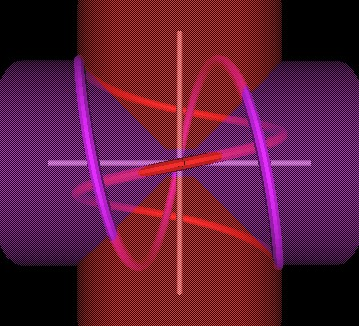
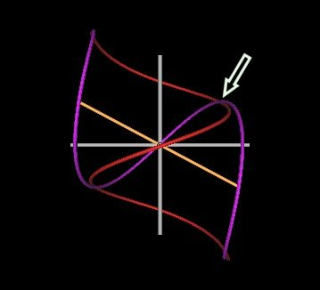

Recall that Lynnclaire Dennis' Pattern knot can be formed by two spirals which intersect each other at 90 degrees.
|  | |
| Figure 1 Intersecting spirals at 90 degrees. | |
However, it should be pointed out that this is not a perfectly smooth formation of a knot. There are two "kinks" where the two spirals intersect wach other. This is a mathematical property and not an artifact of computer modeling nor imperfect computer graphics.
| Figure 2 Knots formed by intersecting spirals will always have 2 kinks. | |
These spiral segments are characterized by being 1.5 cycles each, and have a length:diameter ratio of 1:1.
Because the Face Centered Cubic (FCC) lattice a.k.a. IVM has 6 intersecting spirals at 90° through each node, each node of the lattice ccould have 3 knots at each node.
Considering the 4 rotation axies of the Jitterbug, notice that these axies do not intersect each other at 90°.
It occured to me that spirals intersecting at angles other than 90° might also result in Lynnclaire's Pattern knot.
| Figure 3 Knots formed by intersecting spirals at 45°. | |
Here is an animation of the 45° case.
At an angle of 15°, we have the following figures.
|
Figure 4 Knots formed by intersecting spirals at 15°. (Right figure is rotated about the Z-axis which makes the symmetry axis appear less than 15° to the Z-axis.) |
|
It is obvious from these Figures that the length of the spirals decrease as the angle of intersection decreases.
Also, the spirals' diameter remains the fixed.
That is, only the length of the spirals need to change when changing the angle of intersection.
The kinks remain but are also reduced as the intersection angles decreases.
This leads to the question as to whether or not there is some limit (angle range) for which a knot is no longer formed by the intersecting spirals.
The lower limit is 0° at which point all the spiral traces coincide with one another.
Let us increase the angle of intersection. First to 110°.
| Figure 5 Knots formed by intersecting spirals at 110°. | |
Next, let us try 118°.
| Figure 6 Knots formed by intersecting spirals at 118°. | |
Its still a knot.
Next the spirals intersect at 120°.
| Figure 7 Spirals at 120° do not form a knot. | |
This is no longer a knot.
In the next Figure, I show the 118° (2 figures on top) and the 120° (bottom) cases and indicate where the knot strand will cross to become unknotted.
|  | |
| Figure 8 Spirals intersecting at 118° and 120°. | |
Where indicated by the arrow, the purple strand is in front of the red strand for the 118° case. For the 120° case, the red strand has passed through the purple strand and is, therefore, in front of the purple strand.
We can now show that at the angle of 120°, the knot strands intersect each other and, therefore, for any angles greater than 120°, the spirals fail to form a knot.
Here are some things to keep in mind when trying to determine at what angle the 2 spiral cylinders intersect each other when the spirals just cross over.
Here is a figure showing the intersection condition.
| Figure 9 Spirals intersecting at exactly 120°. |
The red spiral starts at the top "KNOT KINK" point and travels around the cylinder (red "1") 1/2 turn and 1/3rd along its cylinders length.
The blue spiral starts at the bottom "KNOT KINK" point and travels around the cylinder (blue "1") 1/2 turn and 1/3rd along its cylinders length (upward and toward the left).
But this part (blue "1") of the blue spiral also needs to cover 2/3rds of the length up the red spiral's cylinder in order to intersect with the red spiral, which has only traveled 1/3rd down its cylinder length.
Since all the lengths are the same (red "1", "2", "3" and blue "1", "2", "3") we have two equilaterail triangles in the YZ-plane. This means that the cylinders must be 120° apart.
Here is a figure showing the case when the cylinders are 90° apart.
| Figure 10 Spiral cylinders at 90° apart. |
Although all the red and blue lengths are still equal to one another, the red and blue "2" segments do not coincide with each other. This is because the 1/3 point along (down) the red spiral's cylinder is not the same point as the 1/3 point along (leftward) the blue spiral's cylinder.
So, the spirals fail to form a knot when their cylinders intersect at an angle greater than 120°.
Of course, they could still form a knot if we allow the spirals to become distorted along their cylinders. We have assumed that this is not "allowed". That is, the spirals are evenly and symmetrically "stretched" along their cylinders.
Here is an animation of the 130° case.
Here is an animation of the Spirals rotating from 0°thru 120°.
Here is an animation of the Spirals rotating from 0°thru 120° with cylinders shown.